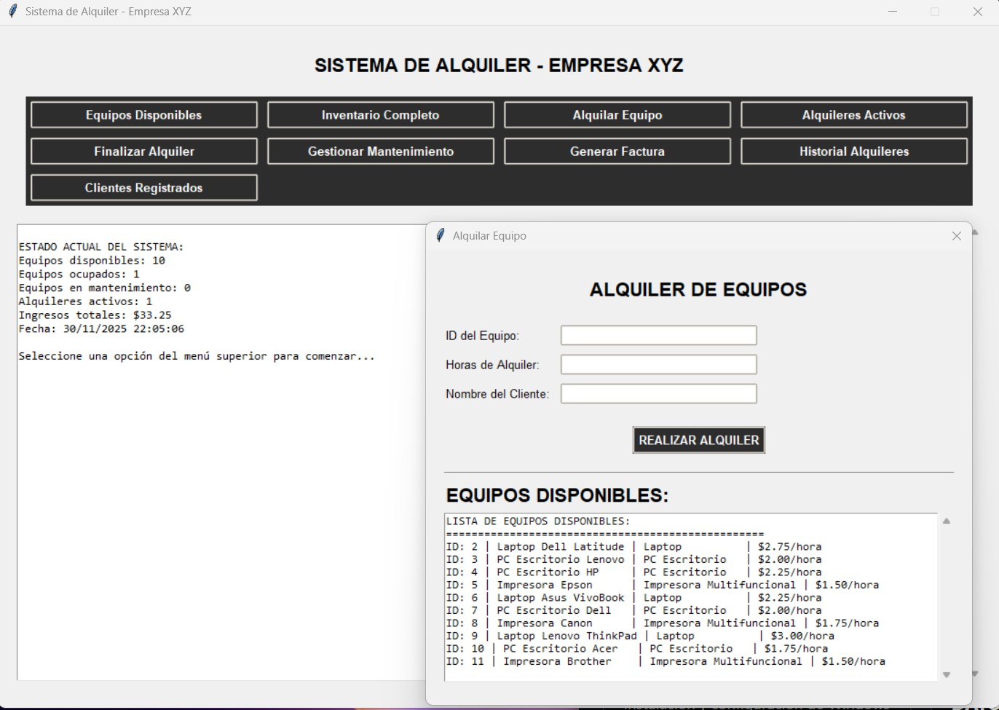
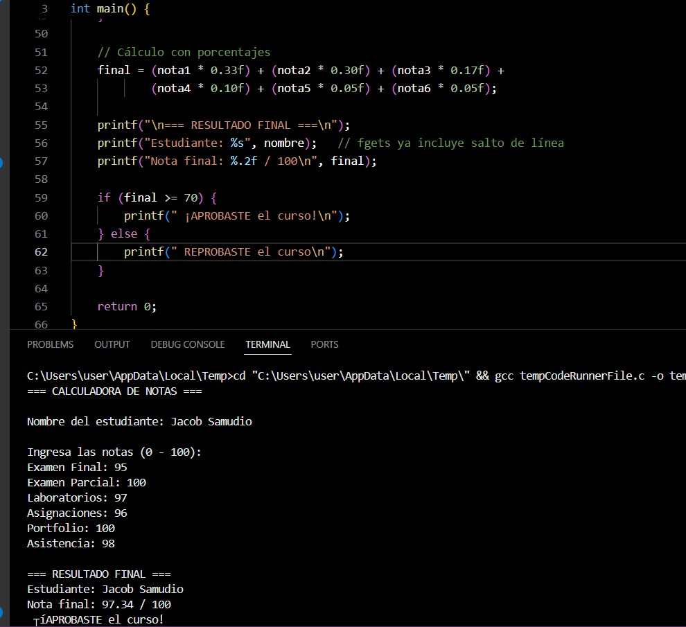
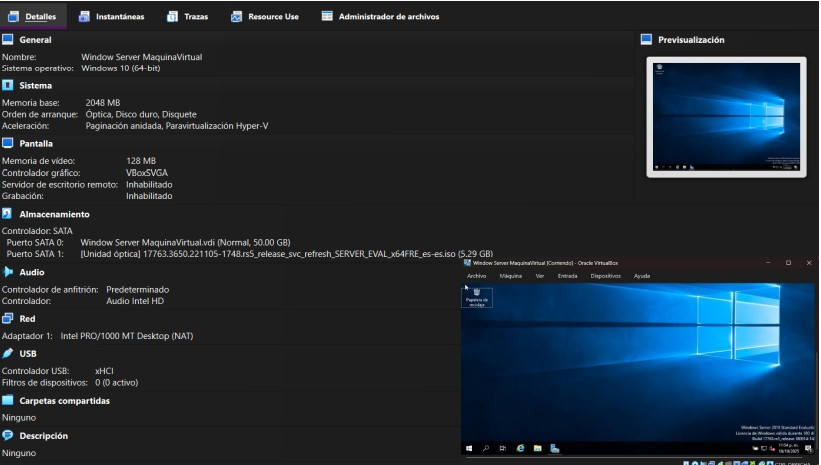
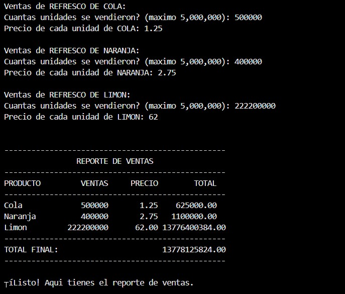
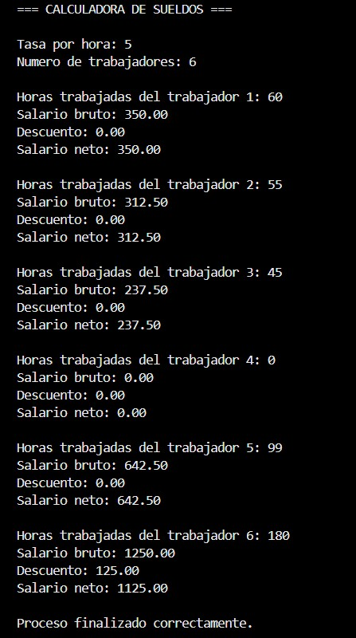

SISTEMA EMPRESARIAL
TALLER PRÁCTICO 1 · SISTEMA DE ALQUILER
Desarrollo de un sistema empresarial de alquiler de equipos
integrando algoritmos de búsqueda secuencial,
estructura de datos tipo pila,
diseño de base de datos
y prototipo funcional en Python.
El sistema administra clientes,
equipos y alquileres
con una estructura lógica organizada.
VER DOCUMENTACIÓN

PROGRAMACIÓN
EJERCICIO PRÁCTICO · LENGUAJE C
Desarrollo de ejercicios algorítmicos
usando estructuras condicionales,
ciclos, validación de datos
y lógica matemática.
Incluye cálculos de notas,
sueldos
y operaciones numéricas.
VER PRÁCTICA

SERVIDORES
EJERCICIO PRÁCTICO · WINDOWS SERVER
Instalación y configuración de Windows Server
bajo un entorno virtualizado.
Implementación de FTP,
accesos remotos
y usuarios.
VER DOCUMENTACIÓN

INFRAESTRUCTURA
LABORATORIO · SERVIDOR DE DATOS
Implementación de estructura de respaldo
con control de acceso.
Apoyo a infraestructura general.
VER LABORATORIO

EVALUACIÓN
PARCIAL · LÓGICA
Evaluación aplicada a estructuras lógicas.
Demuestra análisis y criterio algorítmico.
VER EXAMEN